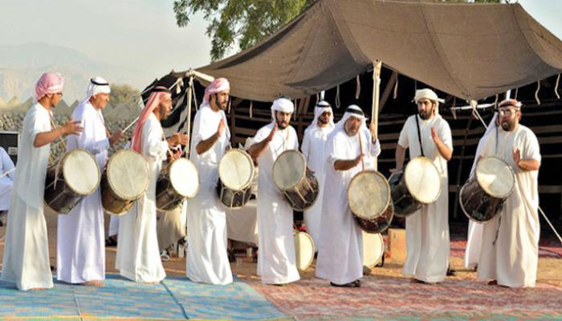

يشمل التراث غير المادي حسب تعريف اليونسكو لتقاليد أو أشكال التعبير الحية الموروثة من أسلافنا والتي ستنقل إلى أحفادنا، مثل التقاليد الشفهية، وفنون الأداء، والممارسات الاجتماعية، والطقوس، والمناسبات الاحتفالية، والمعارف والممارسات المتعلقة بالطبيعة والكون، أو المعارف والمهارات المرتبطة بإنتاج الصناعات الحرفية التقليدية. ويشكل التراث الثقافي غير المادي، بالرغم من طابعه الهش، عاملاً مهماً في الحفاظ على التنوع الثقافي في مواجهة العولمة المتزايدة. ففهم التراث الثقافي غير المادي للجماعات المختلفة يساعد على الحوار بين الثقافات ويشجع على الاحترام المتبادل لطريقة عيش الآخر. ولا تكمن أهمية التراث الثقافي غير المادي في مظهره الثقافي بحد ذاته وإنما في المعارف والمهارات الغنية التي تنقل عبره من جيل إلى آخر. والقيمة الاجتماعية والاقتصادية التي ينطوي عليها هذا النقل للمعارف تهم الأقليات مثلما تهم الكتل الاجتماعية الكبيرة، وتهم البلدان النامية مثلما تهم البلدان المتقدمة.

تُعتبر الفنون الشعبية في سلطنة عمان جزءًا لا يتجزأ من هوية المجتمع العماني وثقافته العريقة. فهي تعكس القيم، والعادات، والتقاليد التي توارثها الناس جيلًا بعد جيل، وتُمارس في مختلف المناسبات سواء كانت وطنية، دينية أو اجتماعية.
فن البرعة: هو رقصة تؤدى بإيقاع سريع ومنسجم، يشارك فيها رجلان يرتديان الزي التقليدي، ويستخدمان الخنجر كرمز للفخر والرجولة. تتحرك الأجساد بتناغم فني رائع يشمل القفز والدوران، وسط أصوات الطبول والمزامير. يُعد هذا الفن تعبيرًا عن القوة والاعتزاز بالهوية، وغالبًا ما يُؤدى في حفلات الزواج والاحتفالات الوطنية.
فن العازي: يُعد من فنون الإلقاء الشعري الذي يجمع بين الفصاحة والكرامة. يقف المؤدي ممسكًا بسيفه أو عصاه، ويلقي أبياتًا تعبر عن الفخر والانتماء، ويُستخدم في استقبال الضيوف الكبار أو في الفعاليات الرسمية، ويُرافق أحيانًا بنغمة إيقاعية خفيفة.
فن الرزفة: من الفنون التي تحمل طابعًا قتاليًا قديمًا، يؤديها رجال مصطفّون على شكل صفين متقابلين، ويتحركون بخطوات مدروسة مع ترديد الأناشيد وضرب الطبول. يُجسّد هذا الفن الوحدة والتكاتف بين أبناء القبيلة ويُمارس في الأعياد والمناسبات الجماعية.
فن الهبوت: يُمارس عادة في الأعياد، وخاصة عيد الأضحى، ويشارك فيه أهالي القرى بشكل جماعي، إذ ينطلقون في مسيرات منظمة من الجبال نحو السهول أو المساجد وهم يرددون الأناشيد الدينية. يبرز هذا الفن روح التعاون والانتماء للمجتمع.
فن المديمة: هو فن نسائي يُمارس غالبًا في مناسبات الخطوبة والزفاف، حيث تجتمع النساء للغناء والرقص على إيقاع الطبول. ويُعتبر وسيلة للتعبير عن الفرح والبهجة والتواصل الاجتماعي بين النساء.

الحرف اليدوية العمانية تمثل إرثًا حضاريًا غنيًا، وهي تجسيد حيّ للإبداع الشعبي المتوارث. يُبدع العمانيون في إنتاج الفضيات كالخناجر والحلي النسائية، التي تُزيَّن بأنماط دقيقة مستوحاة من البيئة المحلية.
كما تشتهر السلطنة بصناعة النسيج، والسعفيات، والفخار، وهي حرف لا تزال تُمارس في العديد من القرى والمناطق، وتُعرض في الأسواق التقليدية. وتُسهم هذه الحرف في الحفاظ على الهوية الوطنية، وتوفير فرص دخل للأسر المنتجة والنساء العاملات.

الأهازيج الشعبية في سلطنة عمان تُعد من أهم الوسائل التي تحفظ التاريخ الشفهي، فهي تتناول مختلف مراحل الحياة: من الطفولة إلى الكهولة، ومن الحب إلى الحزن، ومن العمل إلى الفرح. وتتنوع كلماتها بحسب المناسبة والمكان.
في الأعراس، تُؤدى الأغاني التي تعبّر عن الفرح والبهجة، بينما في مناسبات الحصاد تُغنى أهازيج تعبر عن التعب والشكر. كما تؤدى الأهازيج في البحر، والعمل، والرعي، وحتى أثناء الحروب. وتُشارك النساء والرجال في أدائها، مما يجعلها عنصرًا جامعًا في المجتمع العماني.
© 2025 جميع الحقوق محفوظة لـ تراث غير مادي.